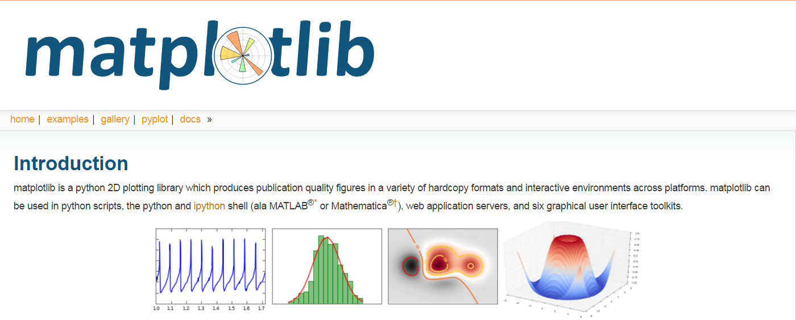

<!DOCTYPE html>
<html lang="zh">
<head><meta name="generator" content="Hexo 3.8.0">
    <meta charset="utf-8">
    
    <title>机器学习_Matplolib使用技巧 | FEI&#39;s Blog</title>
    
    
        <meta name="keywords" content="matplotlib">
    
    <meta name="viewport" content="width=device-width, initial-scale=1, maximum-scale=1">
    <meta name="description" content="matplotlib">
<meta name="keywords" content="matplotlib">
<meta property="og:type" content="article">
<meta property="og:title" content="机器学习_Matplolib使用技巧">
<meta property="og:url" content="http://ff120.github.io/hexoblog/2016/07/11/技术/机器学习/机器学习_Matplolib使用技巧/index.html">
<meta property="og:site_name" content="FEI&#39;s Blog">
<meta property="og:description" content="matplotlib">
<meta property="og:locale" content="zh-Hans">
<meta property="og:image" content="http://ff120.github.io/hexoblog/2016/07/11/技术/机器学习/机器学习_Matplolib使用技巧/matplotlib.png">
<meta property="og:image" content="http://ff120.github.io/hexoblog/2016/07/11/技术/机器学习/机器学习_Matplolib使用技巧/output_3_0.png">
<meta property="og:image" content="http://ff120.github.io/hexoblog/2016/07/11/技术/机器学习/机器学习_Matplolib使用技巧/output_5_0.png">
<meta property="og:image" content="http://ff120.github.io/hexoblog/2016/07/11/技术/机器学习/机器学习_Matplolib使用技巧/output_7_0.png">
<meta property="og:image" content="http://ff120.github.io/hexoblog/2016/07/11/技术/机器学习/机器学习_Matplolib使用技巧/output_9_1.png">
<meta property="og:image" content="http://ff120.github.io/hexoblog/2016/07/11/技术/机器学习/机器学习_Matplolib使用技巧/output_10_1.png">
<meta property="og:image" content="http://ff120.github.io/hexoblog/2016/07/11/技术/机器学习/机器学习_Matplolib使用技巧/output_12_0.png">
<meta property="og:image" content="http://ff120.github.io/hexoblog/2016/07/11/技术/机器学习/机器学习_Matplolib使用技巧/output_14_0.png">
<meta property="og:image" content="http://ff120.github.io/hexoblog/2016/07/11/技术/机器学习/机器学习_Matplolib使用技巧/output_16_0.png">
<meta property="og:image" content="http://ff120.github.io/hexoblog/2016/07/11/技术/机器学习/机器学习_Matplolib使用技巧/output_18_0.png">
<meta property="og:image" content="http://ff120.github.io/hexoblog/2016/07/11/技术/机器学习/机器学习_Matplolib使用技巧/output_20_0.png">
<meta property="og:image" content="http://ff120.github.io/hexoblog/2016/07/11/技术/机器学习/机器学习_Matplolib使用技巧/output_22_0.png">
<meta property="og:image" content="http://ff120.github.io/hexoblog/2016/07/11/技术/机器学习/机器学习_Matplolib使用技巧/output_25_0.png">
<meta property="og:image" content="http://ff120.github.io/hexoblog/2016/07/11/技术/机器学习/机器学习_Matplolib使用技巧/boxplot.png">
<meta property="og:image" content="http://ff120.github.io/hexoblog/2016/07/11/技术/机器学习/机器学习_Matplolib使用技巧/heatmap.jpg">
<meta property="og:updated_time" content="2019-03-28T00:54:57.798Z">
<meta name="twitter:card" content="summary">
<meta name="twitter:title" content="机器学习_Matplolib使用技巧">
<meta name="twitter:description" content="matplotlib">
<meta name="twitter:image" content="http://ff120.github.io/hexoblog/2016/07/11/技术/机器学习/机器学习_Matplolib使用技巧/matplotlib.png">
    

    
        <link rel="alternate" href="/atom.xml" title="FEI&#39;s Blog" type="application/atom+xml">
    

    
        <link rel="icon" href="/hexoblog/favicon.ico">
    

    <link rel="stylesheet" href="/hexoblog/libs/font-awesome/css/font-awesome.min.css">
    <link rel="stylesheet" href="/hexoblog/libs/open-sans/styles.css">
    <link rel="stylesheet" href="/hexoblog/libs/source-code-pro/styles.css">

    <link rel="stylesheet" href="/hexoblog/css/style.css">
    <script src="/hexoblog/libs/jquery/2.1.3/jquery.min.js"></script>
    <script src="/hexoblog/libs/jquery/plugins/cookie/1.4.1/jquery.cookie.js"></script>
    
    
        <link rel="stylesheet" href="/hexoblog/libs/lightgallery/css/lightgallery.min.css">
    
    
        <link rel="stylesheet" href="/hexoblog/libs/justified-gallery/justifiedGallery.min.css">
    
    
    
    


    
        <script async src="//busuanzi.ibruce.info/busuanzi/2.3/busuanzi.pure.mini.js"></script>
    
</head>
</html>
<body>
    <div id="container">
        <header id="header">
    <div id="header-main" class="header-inner">
        <div class="outer">
            <a href="/hexoblog/" id="logo">
                <i class="logo"></i>
                <span class="site-title">FEI&#39;s Blog</span>
            </a>
            <nav id="main-nav">
                
                    <a class="main-nav-link" href="/hexoblog/">首页</a>
                
                    <a class="main-nav-link" href="/hexoblog/archives">归档</a>
                
                    <a class="main-nav-link" href="/hexoblog/categories">分类</a>
                
                    <a class="main-nav-link" href="/hexoblog/tags">标签</a>
                
                    <a class="main-nav-link" href="/hexoblog/about">关于</a>
                
            </nav>
            
            <div id="search-form-wrap">

    <form class="search-form">
        <input type="text" class="ins-search-input search-form-input" placeholder="Rechercher">
        <button type="submit" class="search-form-submit"></button>
    </form>
    <div class="ins-search">
    <div class="ins-search-mask"></div>
    <div class="ins-search-container">
        <div class="ins-input-wrapper">
            <input type="text" class="ins-search-input" placeholder="Type something...">
            <span class="ins-close ins-selectable"><i class="fa fa-times-circle"></i></span>
        </div>
        <div class="ins-section-wrapper">
            <div class="ins-section-container"></div>
        </div>
    </div>
</div>
<script>
(function (window) {
    var INSIGHT_CONFIG = {
        TRANSLATION: {
            POSTS: 'Articles',
            PAGES: 'Pages',
            CATEGORIES: 'Catégories',
            TAGS: 'Tags',
            UNTITLED: '(Untitled)',
        },
        ROOT_URL: '/hexoblog/',
        CONTENT_URL: '/hexoblog/content.json',
    };
    window.INSIGHT_CONFIG = INSIGHT_CONFIG;
})(window);
</script>
<script src="/hexoblog/js/insight.js"></script>

</div>
        </div>
    </div>
    <div id="main-nav-mobile" class="header-sub header-inner">
        <table class="menu outer">
            <tr>
                
                    <td><a class="main-nav-link" href="/hexoblog/">首页</a></td>
                
                    <td><a class="main-nav-link" href="/hexoblog/archives">归档</a></td>
                
                    <td><a class="main-nav-link" href="/hexoblog/categories">分类</a></td>
                
                    <td><a class="main-nav-link" href="/hexoblog/tags">标签</a></td>
                
                    <td><a class="main-nav-link" href="/hexoblog/about">关于</a></td>
                
                <td>
                    
    <div class="search-form">
        <input type="text" class="ins-search-input search-form-input" placeholder="Rechercher">
    </div>

                </td>
            </tr>
        </table>
    </div>
</header>

        <div class="outer">
            
            
                <aside id="sidebar">
   
        
    <div class="widget-wrap" id="categories">
        <h3 class="widget-title">
            <span>Catégories</span>
            &nbsp;
            <a id="allExpand" href="#">
                <i class="fa fa-angle-double-down fa-2x"></i>
            </a>
        </h3>
        
        
        
         <ul class="unstyled" id="tree"> 
                    <li class="directory">
                        <a href="#" data-role="directory">
                            <i class="fa fa-folder"></i>
                            &nbsp;
                            心理学
                        </a>
                         <ul class="unstyled" id="tree"> 
                    <li class="directory">
                        <a href="#" data-role="directory">
                            <i class="fa fa-folder"></i>
                            &nbsp;
                            记忆魔法
                        </a>
                         <ul class="unstyled" id="tree">  <li class="file"><a href="/hexoblog/2019/04/03/心理学/记忆魔法/代码记忆法/">代码记忆法</a></li>  </ul> 
                    </li> 
                     </ul> 
                    </li> 
                    
                    <li class="directory open">
                        <a href="#" data-role="directory">
                            <i class="fa fa-folder-open"></i>
                            &nbsp;
                            技术
                        </a>
                         <ul class="unstyled" id="tree"> 
                    <li class="directory">
                        <a href="#" data-role="directory">
                            <i class="fa fa-folder"></i>
                            &nbsp;
                            Web开发
                        </a>
                         <ul class="unstyled" id="tree">  <li class="file"><a href="/hexoblog/2016/06/11/技术/Web开发/后台开发_How-to-install-Laravel-framework/">How to install Laravel framework</a></li>  <li class="file"><a href="/hexoblog/2016/06/11/技术/Web开发/后台开发_laravel-4-note-01/">laravel 4 note 01</a></li>  <li class="file"><a href="/hexoblog/2016/06/11/技术/Web开发/后台开发_Make-phpStorm-friendly-to-laravel/">Make phpStorm friendly to laravel</a></li>  <li class="file"><a href="/hexoblog/2016/06/11/技术/Web开发/后台开发_sublime-Text-tricks/">sublime Text tricks</a></li>  <li class="file"><a href="/hexoblog/2016/06/11/技术/Web开发/后台开发_think-php-note-01/">think php note 01</a></li>  <li class="file"><a href="/hexoblog/2016/06/11/技术/Web开发/后台开发_think-php-note-02/">think php note 02</a></li>  <li class="file"><a href="/hexoblog/2016/06/11/技术/Web开发/后台开发_think-php-note-03/">think php note 03</a></li>  <li class="file"><a href="/hexoblog/2016/06/11/技术/Web开发/后台开发_PHP编译less文件-lessphp的使用/">PHP编译less文件-lessphp的使用</a></li>  <li class="file"><a href="/hexoblog/2016/06/11/技术/Web开发/后台开发_Lavarel-后台组件frozenode的使用/">Lavarel 后台组件frozenode的使用</a></li>  <li class="file"><a href="/hexoblog/2016/06/11/技术/Web开发/后台开发_Linux常用命令/">Linux常用命令</a></li>  <li class="file"><a href="/hexoblog/2016/06/11/技术/Web开发/后台开发_Linux主机之间同步文件/">Linux主机之间同步文件</a></li>  <li class="file"><a href="/hexoblog/2016/06/11/技术/Web开发/后台开发_PHP基本操作/">PHP基本操作</a></li>  <li class="file"><a href="/hexoblog/2016/06/11/技术/Web开发/后台开发_短信验证码的实现/">短信验证码的实现</a></li>  <li class="file"><a href="/hexoblog/2016/06/11/技术/Web开发/后台开发_配置Apache支持使用HTTPS/">配置Apache支持使用HTTPS</a></li>  <li class="file"><a href="/hexoblog/2016/06/11/技术/Web开发/测试_使用Selenium测试UI/">测试_使用Selenium测试UI</a></li>  <li class="file"><a href="/hexoblog/2016/06/11/技术/Web开发/后台开发_PhpStorm常用快捷键/">PhpStorm常用快捷键</a></li>  <li class="file"><a href="/hexoblog/2016/06/11/技术/Web开发/微信开发_微信发送消息PHP-SDK/">微信发送消息PHP SDK</a></li>  <li class="file"><a href="/hexoblog/2016/06/11/技术/Web开发/微信开发_获取地理位置/">微信获取地理位置 </a></li>  <li class="file"><a href="/hexoblog/2016/06/11/技术/Web开发/微信开发_发送模板消息的代码/">微信发送模板消息的代码</a></li>  <li class="file"><a href="/hexoblog/2016/06/11/技术/Web开发/测试_Selenium-定位元素的几种方式/">测试_Selenium定位元素的几种方式</a></li>  <li class="file"><a href="/hexoblog/2016/06/11/技术/Web开发/测试_Selenium-Action/">测试_Selenium Action</a></li>  <li class="file"><a href="/hexoblog/2016/06/11/技术/Web开发/测试_Apache-JMeter的使用/">测试_Apache JMeter的使用</a></li>  <li class="file"><a href="/hexoblog/2016/06/12/技术/Web开发/后台开发_Apache-配置虚拟主机/">Apache 配置虚拟主机</a></li>  <li class="file"><a href="/hexoblog/2016/06/23/技术/Web开发/后台开发_改进PHP的var-dump-方法使之适应显示从数据库中查出来的数据/">改进PHP的var_dump()方法使之适应显示从数据库中查出来的数据</a></li>  <li class="file"><a href="/hexoblog/2016/06/23/技术/Web开发/后台开发_PHP读写XLS/">PHP读写XLS</a></li>  <li class="file"><a href="/hexoblog/2016/06/30/技术/Web开发/前端_jQuery-EasyUI-学习笔记/">JQuery EasyUI 学习笔记</a></li>  <li class="file"><a href="/hexoblog/2016/06/30/技术/Web开发/前端_bootsharp学习笔记/">Bootsharp学习笔记</a></li>  </ul> 
                    </li> 
                    
                    <li class="directory">
                        <a href="#" data-role="directory">
                            <i class="fa fa-folder"></i>
                            &nbsp;
                            专业术语
                        </a>
                         <ul class="unstyled" id="tree">  <li class="file"><a href="/hexoblog/2017/07/24/技术/专业术语/术语/">英语</a></li>  </ul> 
                    </li> 
                    
                    <li class="directory">
                        <a href="#" data-role="directory">
                            <i class="fa fa-folder"></i>
                            &nbsp;
                            大数据
                        </a>
                         <ul class="unstyled" id="tree">  <li class="file"><a href="/hexoblog/2016/06/23/技术/大数据/大数据_Spark环境下的Kmeans-Python实现/">Spark环境下的Kmeans-Python实现</a></li>  <li class="file"><a href="/hexoblog/2017/10/06/技术/大数据/大数据基础框架/">大数据基础框架</a></li>  </ul> 
                    </li> 
                    
                    <li class="directory">
                        <a href="#" data-role="directory">
                            <i class="fa fa-folder"></i>
                            &nbsp;
                            工具
                        </a>
                         <ul class="unstyled" id="tree"> 
                    <li class="directory">
                        <a href="#" data-role="directory">
                            <i class="fa fa-folder"></i>
                            &nbsp;
                            AutoHotKey
                        </a>
                         <ul class="unstyled" id="tree">  <li class="file"><a href="/hexoblog/2018/12/02/技术/工具/AutoHotKey/AutoHotKey非常有用的脚本/">AutoHotKey非常有用的脚本</a></li>  </ul> 
                    </li> 
                    
                    <li class="directory">
                        <a href="#" data-role="directory">
                            <i class="fa fa-folder"></i>
                            &nbsp;
                            Git
                        </a>
                         <ul class="unstyled" id="tree">  <li class="file"><a href="/hexoblog/2017/05/04/技术/工具/Git/GIT的使用01-基本功能/">GIT的使用01-基本功能</a></li>  <li class="file"><a href="/hexoblog/2018/07/29/技术/工具/Git/Git查询手册/">Git 手册</a></li>  </ul> 
                    </li> 
                    
                    <li class="directory">
                        <a href="#" data-role="directory">
                            <i class="fa fa-folder"></i>
                            &nbsp;
                            Hexo
                        </a>
                         <ul class="unstyled" id="tree">  <li class="file"><a href="/hexoblog/2016/06/12/技术/工具/Hexo/Hexo的使用02-同步/">Hexo的使用02-同步</a></li>  <li class="file"><a href="/hexoblog/2016/06/13/技术/工具/Hexo/Hexo的使用01-搭建/">Hexo的使用01-搭建</a></li>  <li class="file"><a href="/hexoblog/2017/04/12/技术/工具/Hexo/Hexo的使用05-Atom编辑器/">Hexo的使用05-Atom编辑器</a></li>  <li class="file"><a href="/hexoblog/2017/04/12/技术/工具/Hexo/Hexo的使用04-数学公式/">Hexo的使用04-数学公式</a></li>  <li class="file"><a href="/hexoblog/2017/05/05/技术/工具/Hexo/Hexo的使用03-迁移/">Hexo的使用03-迁移</a></li>  <li class="file"><a href="/hexoblog/2017/07/17/技术/工具/Hexo/Hexo的使用06-使用gist存储代码片段/">Hexo中使用gist存储代码片段</a></li>  </ul> 
                    </li> 
                    
                    <li class="directory">
                        <a href="#" data-role="directory">
                            <i class="fa fa-folder"></i>
                            &nbsp;
                            Visio
                        </a>
                         <ul class="unstyled" id="tree">  <li class="file"><a href="/hexoblog/2017/05/05/技术/工具/Visio/VISIO的使用01-基础入门/">VISIO的使用01-基础入门</a></li>  </ul> 
                    </li> 
                    
                    <li class="directory">
                        <a href="#" data-role="directory">
                            <i class="fa fa-folder"></i>
                            &nbsp;
                            图片处理
                        </a>
                         <ul class="unstyled" id="tree">  <li class="file"><a href="/hexoblog/2017/05/05/技术/工具/图片处理/图片处理02-一寸照片/">图片处理02-一寸照片</a></li>  <li class="file"><a href="/hexoblog/2017/05/17/技术/工具/图片处理/图片处理01-合并多张图片/">图片处理01-合并多张图片</a></li>  </ul> 
                    </li> 
                    
                    <li class="directory">
                        <a href="#" data-role="directory">
                            <i class="fa fa-folder"></i>
                            &nbsp;
                            正则表达式
                        </a>
                         <ul class="unstyled" id="tree">  <li class="file"><a href="/hexoblog/2018/07/29/技术/工具/正则表达式/正则表达式/">正则表达式</a></li>  </ul> 
                    </li> 
                    
                    <li class="directory">
                        <a href="#" data-role="directory">
                            <i class="fa fa-folder"></i>
                            &nbsp;
                            编程IDE
                        </a>
                         <ul class="unstyled" id="tree"> 
                    <li class="directory">
                        <a href="#" data-role="directory">
                            <i class="fa fa-folder"></i>
                            &nbsp;
                            Anaconda
                        </a>
                         <ul class="unstyled" id="tree">  <li class="file"><a href="/hexoblog/2017/04/18/技术/工具/编程IDE/Anaconda/Anaconda的使用01-基础/">Anaconda的使用01-基础</a></li>  </ul> 
                    </li> 
                    
                    <li class="directory">
                        <a href="#" data-role="directory">
                            <i class="fa fa-folder"></i>
                            &nbsp;
                            JetBrainsCLion
                        </a>
                         <ul class="unstyled" id="tree">  <li class="file"><a href="/hexoblog/2017/05/04/技术/工具/编程IDE/JetBrainsCLion/JetBrainsCLion的使用01-入门/">JetBrainsCLion的使用01-入门</a></li>  </ul> 
                    </li> 
                    
                    <li class="directory">
                        <a href="#" data-role="directory">
                            <i class="fa fa-folder"></i>
                            &nbsp;
                            VSCode
                        </a>
                         <ul class="unstyled" id="tree">  <li class="file"><a href="/hexoblog/2017/07/24/技术/工具/编程IDE/VSCode/Visual-Studio-Code使用技巧/">Visual Studio Code使用技巧</a></li>  </ul> 
                    </li> 
                     </ul> 
                    </li> 
                    
                    <li class="directory">
                        <a href="#" data-role="directory">
                            <i class="fa fa-folder"></i>
                            &nbsp;
                            网络软件
                        </a>
                         <ul class="unstyled" id="tree">  <li class="file"><a href="/hexoblog/2016/06/12/技术/工具/网络软件/Windows全局代理软件Proxifier/">Windows全局代理软件Proxifier</a></li>  <li class="file"><a href="/hexoblog/2016/06/12/技术/工具/网络软件/Windows手工修改路由表/">Windows手工修改路由表</a></li>  </ul> 
                    </li> 
                     </ul> 
                    </li> 
                    
                    <li class="directory">
                        <a href="#" data-role="directory">
                            <i class="fa fa-folder"></i>
                            &nbsp;
                            数据库
                        </a>
                         <ul class="unstyled" id="tree">  <li class="file"><a href="/hexoblog/2016/06/11/技术/数据库/数据库_Redis入门/">Redis入门</a></li>  <li class="file"><a href="/hexoblog/2016/06/12/技术/数据库/数据库_使用Database-Configuration-Assist-工具创建oracle数据库/">使用Database Configuration Assist 工具创建oracle数据库</a></li>  <li class="file"><a href="/hexoblog/2017/11/02/技术/数据库/SQL/">SQL</a></li>  </ul> 
                    </li> 
                    
                    <li class="directory">
                        <a href="#" data-role="directory">
                            <i class="fa fa-folder"></i>
                            &nbsp;
                            数据结构和算法
                        </a>
                         <ul class="unstyled" id="tree">  <li class="file"><a href="/hexoblog/2017/03/21/技术/数据结构和算法/算法专题_二维数组/">算法专题_二维数组</a></li>  <li class="file"><a href="/hexoblog/2017/03/21/技术/数据结构和算法/算法专题_矩阵和图/">矩阵和用矩阵表示的图的相关问题</a></li>  <li class="file"><a href="/hexoblog/2017/03/21/技术/数据结构和算法/算法专题_位运算/">算法专题_位运算</a></li>  <li class="file"><a href="/hexoblog/2017/03/23/技术/数据结构和算法/算法专题_链表/">算法专题_链表</a></li>  <li class="file"><a href="/hexoblog/2017/04/05/技术/数据结构和算法/算法专题_动态规划/">算法专题_动态规划</a></li>  <li class="file"><a href="/hexoblog/2017/04/06/技术/数据结构和算法/算法专题_图/">算法专题_图问题</a></li>  <li class="file"><a href="/hexoblog/2017/04/08/技术/数据结构和算法/做过的算法题汇总表/">做过的算法题汇总表</a></li>  <li class="file"><a href="/hexoblog/2017/04/09/技术/数据结构和算法/算法专题_二叉树/">算法专题_二叉树</a></li>  <li class="file"><a href="/hexoblog/2017/04/09/技术/数据结构和算法/算法专题_通用树结构/">算法专题_通用树结构</a></li>  <li class="file"><a href="/hexoblog/2017/04/10/技术/数据结构和算法/算法专题_大数据和空间限制/">算法专题_大数据和空间限制</a></li>  <li class="file"><a href="/hexoblog/2017/04/10/技术/数据结构和算法/算法专题_排列组合/">算法专题_排列组合</a></li>  <li class="file"><a href="/hexoblog/2017/04/11/技术/数据结构和算法/本地代码集锦/">本地代码集锦</a></li>  <li class="file"><a href="/hexoblog/2017/04/12/技术/数据结构和算法/算法专题_栈和队列/">算法专题_栈和队列</a></li>  <li class="file"><a href="/hexoblog/2017/04/16/技术/数据结构和算法/算法专题_排序算法/">算法专题_排序算法</a></li>  <li class="file"><a href="/hexoblog/2017/04/17/技术/数据结构和算法/算法专题_算法总结/">算法专题_算法总结</a></li>  <li class="file"><a href="/hexoblog/2017/05/02/技术/数据结构和算法/算法专题_一维数组/">算法专题_一维数组</a></li>  <li class="file"><a href="/hexoblog/2017/05/05/技术/数据结构和算法/算法专题_图之网络流/">算法专题_图之网络流</a></li>  <li class="file"><a href="/hexoblog/2017/05/06/技术/数据结构和算法/算法专题_图之最短路径/">算法专题_图之最短路径</a></li>  <li class="file"><a href="/hexoblog/2017/05/06/技术/数据结构和算法/算法专题_最小生成树/">算法专题_最小生成树</a></li>  <li class="file"><a href="/hexoblog/2017/05/06/技术/数据结构和算法/算法专题_霍夫曼编码/">算法专题_霍夫曼编码(哈夫曼编码)</a></li>  <li class="file"><a href="/hexoblog/2017/05/07/技术/数据结构和算法/Kickstart-Round-B-2017/">Kickstart Round B 2017</a></li>  <li class="file"><a href="/hexoblog/2017/05/08/技术/数据结构和算法/算法专题_模运算/">算法专题_模运算</a></li>  <li class="file"><a href="/hexoblog/2017/05/09/技术/数据结构和算法/算法专题_素数问题/">算法专题_素数问题</a></li>  <li class="file"><a href="/hexoblog/2017/05/11/技术/数据结构和算法/算法专题_计算几何/">算法专题_计算几何</a></li>  <li class="file"><a href="/hexoblog/2017/05/27/技术/数据结构和算法/计蒜之道2017程序设计大赛/">计蒜之道2017程序设计大赛</a></li>  <li class="file"><a href="/hexoblog/2017/05/28/技术/数据结构和算法/算法专题_字符串匹配/">算法专题_字符串匹配</a></li>  <li class="file"><a href="/hexoblog/2017/07/12/技术/数据结构和算法/四等分数组/">四等分数组</a></li>  <li class="file"><a href="/hexoblog/2017/07/12/技术/数据结构和算法/矩阵的遍历/">矩阵的遍历</a></li>  <li class="file"><a href="/hexoblog/2017/07/20/技术/数据结构和算法/N皇后问题/">N皇后问题</a></li>  <li class="file"><a href="/hexoblog/2017/07/23/技术/数据结构和算法/算法专题_线段树/">算法专题_线段树</a></li>  <li class="file"><a href="/hexoblog/2017/07/23/技术/数据结构和算法/算法专题_树状数组/">算法专题_树状数组</a></li>  <li class="file"><a href="/hexoblog/2017/07/23/技术/数据结构和算法/算法专题_并查集/">算法专题_并查集</a></li>  <li class="file"><a href="/hexoblog/2017/07/26/技术/数据结构和算法/算法专题_链表2/">算法专题_链表2</a></li>  <li class="file"><a href="/hexoblog/2017/08/06/技术/数据结构和算法/算法专题_二叉堆/">算法专题_二叉堆</a></li>  <li class="file"><a href="/hexoblog/2017/08/07/技术/数据结构和算法/算法专题_快速排序/">算法专题_快速排序</a></li>  <li class="file"><a href="/hexoblog/2017/08/07/技术/数据结构和算法/算法专题_归并排序/">算法专题_归并排序</a></li>  <li class="file"><a href="/hexoblog/2017/08/13/技术/数据结构和算法/算法专题-hihocoder/">算法专题_hihocoder</a></li>  <li class="file"><a href="/hexoblog/2017/08/17/技术/数据结构和算法/算法专题-贪心法/">算法专题_贪心法</a></li>  <li class="file"><a href="/hexoblog/2017/08/18/技术/数据结构和算法/阿里在线测评-兔子繁殖问题/">阿里笔试</a></li>  <li class="file"><a href="/hexoblog/2017/08/22/技术/数据结构和算法/今日头条-在线编程题/">今日头条_在线编程题</a></li>  <li class="file"><a href="/hexoblog/2017/08/23/技术/数据结构和算法/算法专题-字典树-Trie树/">算法专题_字典树(Trie树)</a></li>  <li class="file"><a href="/hexoblog/2017/09/23/技术/数据结构和算法/算法专题_二叉树2/">算法专题_二叉树2</a></li>  <li class="file"><a href="/hexoblog/2017/09/27/技术/数据结构和算法/手写代码-其他/">手写代码-其他</a></li>  <li class="file"><a href="/hexoblog/2017/10/03/技术/数据结构和算法/算法专题-常见题目/">算法专题_常见题目</a></li>  </ul> 
                    </li> 
                    
                    <li class="directory open">
                        <a href="#" data-role="directory">
                            <i class="fa fa-folder-open"></i>
                            &nbsp;
                            机器学习
                        </a>
                         <ul class="unstyled" id="tree"> 
                    <li class="directory">
                        <a href="#" data-role="directory">
                            <i class="fa fa-folder"></i>
                            &nbsp;
                            深度学习
                        </a>
                         <ul class="unstyled" id="tree">  <li class="file"><a href="/hexoblog/2017/03/22/技术/机器学习/深度学习/深度学习_Theano使用技巧/">深度学习_Theano使用技巧</a></li>  <li class="file"><a href="/hexoblog/2017/04/18/技术/机器学习/深度学习/深度学习_基本概念/">深度学习_基本概念</a></li>  <li class="file"><a href="/hexoblog/2017/04/18/技术/机器学习/深度学习/深度学习_利用神经网络识别手写数字/">深度学习__利用神经网络识别手写数字</a></li>  <li class="file"><a href="/hexoblog/2017/04/19/技术/机器学习/深度学习/深度学习_反向传播算法及简单实例/">深度学习_反向传播算法及简单实例</a></li>  <li class="file"><a href="/hexoblog/2017/04/19/技术/机器学习/深度学习/深度学习_Keras使用技巧/">深度学习_Keras使用技巧</a></li>  <li class="file"><a href="/hexoblog/2017/04/20/技术/机器学习/深度学习/深度学习_使用keras实现autoencoder/">深度学习_使用keras实现autoencoder</a></li>  <li class="file"><a href="/hexoblog/2017/04/20/技术/机器学习/深度学习/深度学习_卷积神经网络/">深度学习_卷积神经网络</a></li>  <li class="file"><a href="/hexoblog/2017/04/27/技术/机器学习/深度学习/深度学习_使用autoencoder自动提取特征/">深度学习_使用autoencoder自动提取特征</a></li>  <li class="file"><a href="/hexoblog/2017/05/10/技术/机器学习/深度学习/深度学习_递归神经网络(RNN)/">深度学习_递归神经网络(RNN)</a></li>  <li class="file"><a href="/hexoblog/2017/05/10/技术/机器学习/深度学习/深度学习_限制波尔茨曼向量机(RBM)/">深度学习_限制波尔茨曼向量机(RBM)</a></li>  <li class="file"><a href="/hexoblog/2017/05/12/技术/机器学习/深度学习/深度学习_TensorFlow使用技巧/">深度学习_TensorFlow使用技巧</a></li>  </ul> 
                    </li> 
                     <li class="file"><a href="/hexoblog/2016/06/16/技术/机器学习/机器学习_Scikit-Learn-ManyClassifier/">同时使用多个分类器(Scikit-Learn)</a></li>  <li class="file"><a href="/hexoblog/2016/06/16/技术/机器学习/机器学习_范数/">机器学习_范数</a></li>  <li class="file"><a href="/hexoblog/2016/06/20/技术/机器学习/机器学习_学习路线/">机器学习_学习路线</a></li>  <li class="file"><a href="/hexoblog/2016/06/20/技术/机器学习/机器学习_手写数字识别/">机器学习_手写数字识别</a></li>  <li class="file active"><a href="/hexoblog/2016/07/11/技术/机器学习/机器学习_Matplolib使用技巧/">机器学习_Matplolib使用技巧</a></li>  <li class="file"><a href="/hexoblog/2017/03/22/技术/机器学习/机器学习_人脸识别/">机器学习_人脸识别</a></li>  <li class="file"><a href="/hexoblog/2017/05/04/技术/机器学习/机器学习_Matlab使用技巧/">机器学习_Matlab使用技巧</a></li>  <li class="file"><a href="/hexoblog/2017/05/11/技术/机器学习/机器学习_时间序列预测分析算法/">机器学习_时间序列预测分析算法</a></li>  <li class="file"><a href="/hexoblog/2017/05/14/技术/机器学习/机器学习_Scikit-Learn使用技巧/">深度学习_Scikit-Learn机器学习算法的使用</a></li>  <li class="file"><a href="/hexoblog/2017/05/15/技术/机器学习/机器学习_时间序列预测の广告效果预测/">机器学习_时间序列预测の广告效果预测</a></li>  <li class="file"><a href="/hexoblog/2017/05/15/技术/机器学习/机器学习_算法汇总/">机器学习_算法汇总</a></li>  <li class="file"><a href="/hexoblog/2017/05/17/技术/机器学习/机器学习_Pandas使用技巧/">深度学习_Pandas使用技巧</a></li>  <li class="file"><a href="/hexoblog/2017/05/19/技术/机器学习/机器学习_感知机/">机器学习_感知机</a></li>  <li class="file"><a href="/hexoblog/2017/05/19/技术/机器学习/机器学习_逻辑回归/">机器学习_逻辑回归</a></li>  <li class="file"><a href="/hexoblog/2017/05/22/技术/机器学习/机器学习_损失函数/">机器学习_损失函数</a></li>  <li class="file"><a href="/hexoblog/2017/06/03/技术/机器学习/机器学习_分类器性能的度量/">机器学习_分类器性能的度量</a></li>  <li class="file"><a href="/hexoblog/2017/06/15/技术/机器学习/机器学习_Scipy使用技巧/">机器学习_Scipy使用技巧</a></li>  <li class="file"><a href="/hexoblog/2017/06/15/技术/机器学习/机器学习_Python使用技巧/">深度学习_Python使用技巧</a></li>  <li class="file"><a href="/hexoblog/2017/07/23/技术/机器学习/机器学习-Numpy使用技巧/">机器学习_Numpy使用技巧</a></li>  <li class="file"><a href="/hexoblog/2017/10/15/技术/机器学习/KNN-with-C/">KNN with C++</a></li>  <li class="file"><a href="/hexoblog/2017/11/04/技术/机器学习/机器学习-绪论-基本概念/">机器学习-绪论-基本概念</a></li>  <li class="file"><a href="/hexoblog/2017/11/04/技术/机器学习/机器学习-第一章-逻辑回归/">机器学习-第一章-逻辑回归</a></li>  <li class="file"><a href="/hexoblog/2017/11/04/技术/机器学习/机器学习-第二章-决策树/">机器学习-第二章-决策树</a></li>  <li class="file"><a href="/hexoblog/2017/11/04/技术/机器学习/机器学习-第三章-朴素贝叶斯/">机器学习-第三章-朴素贝叶斯</a></li>  <li class="file"><a href="/hexoblog/2017/11/04/技术/机器学习/机器学习-第四章-支持向量机/">机器学习-第四章-支持向量机</a></li>  <li class="file"><a href="/hexoblog/2017/11/04/技术/机器学习/机器学习-第五章-最近邻/">机器学习-第五章-最近邻</a></li>  <li class="file"><a href="/hexoblog/2017/11/04/技术/机器学习/机器学习-第六章-kmeans/">机器学习-第六章-kmeans</a></li>  <li class="file"><a href="/hexoblog/2017/11/04/技术/机器学习/机器学习-第七章-感知机/">机器学习-第七章-感知机</a></li>  </ul> 
                    </li> 
                    
                    <li class="directory">
                        <a href="#" data-role="directory">
                            <i class="fa fa-folder"></i>
                            &nbsp;
                            编程语言
                        </a>
                         <ul class="unstyled" id="tree"> 
                    <li class="directory">
                        <a href="#" data-role="directory">
                            <i class="fa fa-folder"></i>
                            &nbsp;
                            C++
                        </a>
                         <ul class="unstyled" id="tree">  <li class="file"><a href="/hexoblog/2017/04/07/技术/编程语言/C++/C++语言技巧/">C++语言技巧</a></li>  </ul> 
                    </li> 
                     </ul> 
                    </li> 
                    
                    <li class="directory">
                        <a href="#" data-role="directory">
                            <i class="fa fa-folder"></i>
                            &nbsp;
                            计算机基础
                        </a>
                         <ul class="unstyled" id="tree"> 
                    <li class="directory">
                        <a href="#" data-role="directory">
                            <i class="fa fa-folder"></i>
                            &nbsp;
                            计算机网络
                        </a>
                         <ul class="unstyled" id="tree">  <li class="file"><a href="/hexoblog/2016/06/12/技术/计算机基础/计算机网络/网络_校园网多终端上网方案/">校园网多终端上网方案</a></li>  <li class="file"><a href="/hexoblog/2017/07/12/技术/计算机基础/计算机网络/计算机网络/">计算机网络</a></li>  </ul> 
                    </li> 
                     </ul> 
                    </li> 
                    
                    <li class="directory">
                        <a href="#" data-role="directory">
                            <i class="fa fa-folder"></i>
                            &nbsp;
                            认知神经科学
                        </a>
                         <ul class="unstyled" id="tree">  <li class="file"><a href="/hexoblog/2016/06/12/技术/认知神经科学/文献检索方法/">文献检索方法</a></li>  <li class="file"><a href="/hexoblog/2016/06/12/技术/认知神经科学/参考文献书写格式/">参考文献书写格式</a></li>  <li class="file"><a href="/hexoblog/2016/06/12/技术/认知神经科学/使用Python处理fMRI数据/">使用Python处理fMRI数据</a></li>  <li class="file"><a href="/hexoblog/2016/06/22/技术/认知神经科学/中英文对照/">中英文对照</a></li>  <li class="file"><a href="/hexoblog/2017/01/03/技术/认知神经科学/circos入门教程/">circos入门教程</a></li>  <li class="file"><a href="/hexoblog/2017/03/08/技术/认知神经科学/基于视频的车牌识别和流量统计/">基于视频的车牌识别和流量统计</a></li>  <li class="file"><a href="/hexoblog/2017/03/08/技术/认知神经科学/基于贝叶斯网络和隐性知识的AU识别研究/">基于贝叶斯网络和隐性知识的AU识别研究</a></li>  <li class="file"><a href="/hexoblog/2017/03/09/技术/认知神经科学/基于连接的脑信息解码研究/">基于连接信息的脑信息解码研究</a></li>  <li class="file"><a href="/hexoblog/2017/03/09/技术/认知神经科学/认知神经科学系列目录/">认知神经科学系列目录</a></li>  <li class="file"><a href="/hexoblog/2017/03/20/技术/认知神经科学/多被试多RUN批量预处理(SPM)/">多被试多RUN批量预处理(SPM)</a></li>  <li class="file"><a href="/hexoblog/2017/03/20/技术/认知神经科学/SPM预处理中的常用操作/">SPM预处理中的常用操作</a></li>  <li class="file"><a href="/hexoblog/2017/03/20/技术/认知神经科学/动态因果模型(DCM)的批量定义和估计/">动态因果模型(DCM)的批量定义和估计</a></li>  <li class="file"><a href="/hexoblog/2017/04/13/技术/认知神经科学/使用SPM做Second-Level分析/">使用SPM做Second_Level分析</a></li>  <li class="file"><a href="/hexoblog/2017/04/13/技术/认知神经科学/DCM模型的定义和估计/">DCM模型的定义和估计</a></li>  <li class="file"><a href="/hexoblog/2017/04/14/技术/认知神经科学/XJVIEW的使用技巧/">XJVIEW的使用技巧</a></li>  <li class="file"><a href="/hexoblog/2017/04/14/技术/认知神经科学/SPM中函数的修改和使用/">SPM中函数的修改和使用</a></li>  <li class="file"><a href="/hexoblog/2017/05/02/技术/认知神经科学/fMRI中常用的工具包/">fMRI中常用的工具包</a></li>  <li class="file"><a href="/hexoblog/2017/05/11/技术/认知神经科学/使用3D卷积神经神经网络提取脑成像数据的特征/">使用3D卷积神经神经网络提取脑成像数据的特征</a></li>  <li class="file"><a href="/hexoblog/2017/05/14/技术/认知神经科学/fMRI相关的资源汇总/">fMRI相关的资源汇总</a></li>  <li class="file"><a href="/hexoblog/2017/05/30/技术/认知神经科学/fMRI相关问题汇总/">fMRI相关问题汇总</a></li>  </ul> 
                    </li> 
                     </ul> 
                    </li> 
                    
                    <li class="directory">
                        <a href="#" data-role="directory">
                            <i class="fa fa-folder"></i>
                            &nbsp;
                            收藏夹
                        </a>
                         <ul class="unstyled" id="tree">  <li class="file"><a href="/hexoblog/2017/03/22/收藏夹/博客集锦/">博客收藏</a></li>  </ul> 
                    </li> 
                     </ul> 
    </div>
    <script>
        $(document).ready(function() {
            var iconFolderOpenClass  = 'fa-folder-open';
            var iconFolderCloseClass = 'fa-folder';
            var iconAllExpandClass = 'fa-angle-double-down';
            var iconAllPackClass = 'fa-angle-double-up';
            // Handle directory-tree expansion:
            // 左键单独展开目录
            $(document).on('click', '#categories a[data-role="directory"]', function (event) {
                event.preventDefault();

                var icon = $(this).children('.fa');
                var expanded = icon.hasClass(iconFolderOpenClass);
                var subtree = $(this).siblings('ul');
                icon.removeClass(iconFolderOpenClass).removeClass(iconFolderCloseClass);
                if (expanded) {
                    if (typeof subtree != 'undefined') {
                        subtree.slideUp({ duration: 100 });
                    }
                    icon.addClass(iconFolderCloseClass);
                } else {
                    if (typeof subtree != 'undefined') {
                        subtree.slideDown({ duration: 100 });
                    }
                    icon.addClass(iconFolderOpenClass);
                }
            });
            // 右键展开下属所有目录
            $('#categories a[data-role="directory"]').bind("contextmenu", function(event){
                event.preventDefault();
                
                var icon = $(this).children('.fa');
                var expanded = icon.hasClass(iconFolderOpenClass);
                var listNode = $(this).siblings('ul');
                var subtrees = $.merge(listNode.find('li ul'), listNode);
                var icons = $.merge(listNode.find('.fa'), icon);
                icons.removeClass(iconFolderOpenClass).removeClass(iconFolderCloseClass);
                if(expanded) {
                    subtrees.slideUp({ duration: 100 });
                    icons.addClass(iconFolderCloseClass);
                } else {
                    subtrees.slideDown({ duration: 100 });
                    icons.addClass(iconFolderOpenClass);
                }
            })
            // 展开关闭所有目录按钮
            $(document).on('click', '#allExpand', function (event) {
                event.preventDefault();
                
                var icon = $(this).children('.fa');
                var expanded = icon.hasClass(iconAllExpandClass);
                icon.removeClass(iconAllExpandClass).removeClass(iconAllPackClass);
                if(expanded) {
                    $('#sidebar .fa.fa-folder').removeClass('fa-folder').addClass('fa-folder-open')
                    $('#categories li ul').slideDown({ duration: 100 });
                    icon.addClass(iconAllPackClass);
                } else {
                    $('#sidebar .fa.fa-folder-open').removeClass('fa-folder-open').addClass('fa-folder')
                    $('#categories li ul').slideUp({ duration: 100 });
                    icon.addClass(iconAllExpandClass);
                }
            });  
        });
    </script>

    
    <div id="toTop" class="fa fa-angle-up"></div>
</aside>
            
            <section id="main"><article id="post-技术/机器学习/机器学习_Matplolib使用技巧" class="article article-type-post" itemscope="" itemprop="blogPost">
    <div class="article-inner">
        
        
            <header class="article-header">
                
                    <div class="article-meta">
                        
    <div class="article-category">
    	<i class="fa fa-folder"></i>
        <a class="article-category-link" href="/hexoblog/categories/技术/">技术</a><i class="fa fa-angle-right"></i><a class="article-category-link" href="/hexoblog/categories/技术/机器学习/">机器学习</a>
    </div>

                        
    <div class="article-tag">
        <i class="fa fa-tag"></i>
        <a class="tag-link" href="/hexoblog/tags/matplotlib/">matplotlib</a>
    </div>

                        
    <div class="article-date">
        <i class="fa fa-calendar"></i>
        <a href="/hexoblog/2016/07/11/技术/机器学习/机器学习_Matplolib使用技巧/">
            <time datetime="2016-07-11T03:11:36.000Z" itemprop="datePublished">2016-07-11</time>
        </a>
    </div>


                        
                            <i class="fa fa-bar-chart"></i>
                            <span id="busuanzi_container_site_pv"><span id="busuanzi_value_page_pv"></span></span>    
                        
                        
                            <div class="article-meta-button">
                                <a href="https://github.com/FF120/hexoblog/raw/master/source/_posts/技术/机器学习/机器学习_Matplolib使用技巧.md"> Source </a>
                            </div>
                            <div class="article-meta-button">
                                <a href="https://github.com/FF120/hexoblog/edit/master/source/_posts/技术/机器学习/机器学习_Matplolib使用技巧.md"> Edit </a>
                            </div>
                            <div class="article-meta-button">
                                <a href="https://github.com/FF120/hexoblog/commits/master/source/_posts/技术/机器学习/机器学习_Matplolib使用技巧.md"> History </a>
                            </div>
                        
                    </div>
                
                
    
        <h1 class="article-title" itemprop="name">
            机器学习_Matplolib使用技巧
        </h1>
    

            </header>
        
        
        <div class="article-entry" itemprop="articleBody">
        
        
            
                <div id="toc" class="toc-article">
                <strong class="toc-title">Catalogue</strong>
                    <ol class="toc"><li class="toc-item toc-level-2"><a class="toc-link" href="#pyplot"><span class="toc-number">1.</span> <span class="toc-text">pyplot</span></a><ol class="toc-child"><li class="toc-item toc-level-3"><a class="toc-link" href="#引入"><span class="toc-number">1.1.</span> <span class="toc-text">引入</span></a></li><li class="toc-item toc-level-3"><a class="toc-link" href="#画线"><span class="toc-number">1.2.</span> <span class="toc-text">画线</span></a></li><li class="toc-item toc-level-3"><a class="toc-link" href="#控制样式"><span class="toc-number">1.3.</span> <span class="toc-text">控制样式</span></a></li><li class="toc-item toc-level-3"><a class="toc-link" href="#同时画多个图"><span class="toc-number">1.4.</span> <span class="toc-text">同时画多个图</span></a></li><li class="toc-item toc-level-3"><a class="toc-link" href="#图例"><span class="toc-number">1.5.</span> <span class="toc-text">图例</span></a></li><li class="toc-item toc-level-3"><a class="toc-link" href="#各种图"><span class="toc-number">1.6.</span> <span class="toc-text">各种图</span></a><ol class="toc-child"><li class="toc-item toc-level-4"><a class="toc-link" href="#基本图表plot"><span class="toc-number">1.6.1.</span> <span class="toc-text">基本图表(plot)</span></a></li><li class="toc-item toc-level-4"><a class="toc-link" href="#多个子图绘制在一起subplot"><span class="toc-number">1.6.2.</span> <span class="toc-text">多个子图绘制在一起(subplot)</span></a></li><li class="toc-item toc-level-4"><a class="toc-link" href="#直方图hist"><span class="toc-number">1.6.3.</span> <span class="toc-text">直方图(hist)</span></a></li><li class="toc-item toc-level-4"><a class="toc-link" href="#饼状图pie"><span class="toc-number">1.6.4.</span> <span class="toc-text">饼状图(pie)</span></a></li><li class="toc-item toc-level-4"><a class="toc-link" href="#表格"><span class="toc-number">1.6.5.</span> <span class="toc-text">表格</span></a></li><li class="toc-item toc-level-4"><a class="toc-link" href="#极坐标下绘图"><span class="toc-number">1.6.6.</span> <span class="toc-text">极坐标下绘图</span></a></li></ol></li><li class="toc-item toc-level-3"><a class="toc-link" href="#颜色colormaps"><span class="toc-number">1.7.</span> <span class="toc-text">颜色（Colormaps）</span></a></li><li class="toc-item toc-level-3"><a class="toc-link" href="#动画animation"><span class="toc-number">1.8.</span> <span class="toc-text">动画（animation）</span></a></li><li class="toc-item toc-level-3"><a class="toc-link" href="#配色"><span class="toc-number">1.9.</span> <span class="toc-text">配色</span></a></li></ol></li><li class="toc-item toc-level-2"><a class="toc-link" href="#统计绘图seaborn"><span class="toc-number">2.</span> <span class="toc-text">统计绘图(seaborn)</span></a><ol class="toc-child"><li class="toc-item toc-level-3"><a class="toc-link" href="#箱线图"><span class="toc-number">2.1.</span> <span class="toc-text">箱线图</span></a></li><li class="toc-item toc-level-3"><a class="toc-link" href="#矩阵可视化"><span class="toc-number">2.2.</span> <span class="toc-text">矩阵可视化</span></a></li></ol></li><li class="toc-item toc-level-2"><a class="toc-link" href="#牛逼的绘图"><span class="toc-number">3.</span> <span class="toc-text">牛逼的绘图</span></a></li><li class="toc-item toc-level-2"><a class="toc-link" href="#参考文献"><span class="toc-number">4.</span> <span class="toc-text">参考文献</span></a></li></ol>
                </div>
            
        
        
            <div class="figure">

<p class="caption">matplotlib</p>
</div>
<a id="more"></a>
<p>　　Matplotlib是一个使用Python实现的画图函数库。它可以以Python脚本，或者IPython Shell的形式被被使用。它是最著名的python绘图库，它提供了一整套和Matlab相似的命令API，十分适合交互式的进行制图。而且也可以方便的将它作为绘图控件，嵌入到GUI程序中去。它的文档相当完备，并且Gallery页面中有上百幅缩略图，打开之后都有源程序。因此如果你需要绘制某种类型的图，只需要在这个页面中浏览/复制/粘贴一下，基本上都能搞定。 　　Matplotlib官方网站：<a href="http://matplotlib.org/" class="uri" target="_blank" rel="noopener">http://matplotlib.org/</a> 　　Gallery页面地址：<a href="http://matplotlib.org/gallery.html" class="uri" target="_blank" rel="noopener">http://matplotlib.org/gallery.html</a></p>
<h2 id="pyplot">pyplot</h2>
<p>　　pyplot是一个仿照MATLAB画图的接口设计的一个画图的库，接口的函数名称和使用规则都和MATLAB类似。</p>
<h3 id="引入">引入</h3>
<figure class="highlight python"><table><tr><td class="gutter"><pre><span class="line">1</span><br></pre></td><td class="code"><pre><span class="line"><span class="keyword">import</span> matplotlib.pyplot <span class="keyword">as</span> plt</span><br></pre></td></tr></table></figure>
<h3 id="画线">画线</h3>
<p><code>plt.plot(x,y,commond)</code> x表示横坐标的取值，y表示纵坐标的取值，commond是可选的控制参数。如果只传递一个参数，例如plot(a), a被认为是纵坐标，横坐标为从0开始的自然数 0,1,2,3,… 还可以以两个或者三个参数为一组传递参数进入plot,这样可以一次画多条线段，<code>plot(x1,y1,x2,y2,x3,y3)</code></p>
<blockquote>
<p>commond的取值： b- : 蓝色直线 ro : 红色圆点 r– : 红色虚线 bs : 蓝色实心方框 g^ : 绿色实心三角</p>
</blockquote>
<figure class="highlight python"><table><tr><td class="gutter"><pre><span class="line">1</span><br><span class="line">2</span><br><span class="line">3</span><br><span class="line">4</span><br><span class="line">5</span><br></pre></td><td class="code"><pre><span class="line">%matplotlib inline</span><br><span class="line">plt.plot([<span class="number">8</span>,<span class="number">2</span>,<span class="number">5</span>,<span class="number">7</span>])</span><br><span class="line">plt.plot([<span class="number">1</span>,<span class="number">2</span>,<span class="number">3</span>,<span class="number">4</span>],[<span class="number">2</span>,<span class="number">3</span>,<span class="number">3</span>,<span class="number">2</span>],<span class="string">'go'</span>)</span><br><span class="line">plt.plot([<span class="number">1</span>,<span class="number">2</span>,<span class="number">3</span>,<span class="number">4</span>],[<span class="number">3</span>,<span class="number">3</span>,<span class="number">3</span>,<span class="number">3</span>],<span class="string">'r--'</span>,[<span class="number">1</span>,<span class="number">2</span>,<span class="number">3</span>,<span class="number">4</span>],[<span class="number">4</span>,<span class="number">4</span>,<span class="number">4</span>,<span class="number">4</span>],<span class="string">'r^'</span>,[<span class="number">1</span>,<span class="number">2</span>,<span class="number">3</span>,<span class="number">4</span>],[<span class="number">5</span>,<span class="number">5</span>,<span class="number">5</span>,<span class="number">5</span>],<span class="string">'rs'</span>)</span><br><span class="line">plt.show()</span><br></pre></td></tr></table></figure>
<div class="figure">

<p class="caption">png</p>
</div>
<h3 id="控制样式">控制样式</h3>
<ol style="list-style-type: decimal">
<li>设置横坐标和纵坐标的取值范围：plt.axis([xmin.xmax,ymin,ymax])</li>
<li><p>设置线宽：<code>plt.plot(x,y,linewidth = 2)</code> 或者使用set方法：<code>line, = plot(x,y,'-')</code> <code>line.set_antialiased(False)</code> <code>plt.setp(lines, color='r', linewidth=2.0)</code> 要查看所有可以设置的属性，可以使用<code>plt.setp(lines)</code></p></li>
<li><p>设置坐标标识：</p></li>
</ol>
<figure class="highlight python"><table><tr><td class="gutter"><pre><span class="line">1</span><br><span class="line">2</span><br><span class="line">3</span><br><span class="line">4</span><br><span class="line">5</span><br></pre></td><td class="code"><pre><span class="line">plt.xlable(<span class="string">'x轴说明'</span>,fontsize=<span class="number">14</span>,color=<span class="string">'red'</span>)</span><br><span class="line">plt.ylabel(<span class="string">'y轴说明'</span>)</span><br><span class="line">plt.title(<span class="string">'图表标题'</span>)</span><br><span class="line">plt.text(<span class="string">'图表中说明性文字'</span>)</span><br><span class="line">plt.grid(<span class="literal">True</span>) <span class="comment">#是否显示网格线</span></span><br></pre></td></tr></table></figure>
<p>每个设置都有更多的选项可以控制显示的各个方面，详细的属性信息参考<a href="http://matplotlib.org/users/text_props.html#text-properties" target="_blank" rel="noopener">Text properties and layout</a>,关于图表上数学公式的书写，参考<a href="http://matplotlib.org/users/usetex.html#usetex-tutorial" target="_blank" rel="noopener">Text rendering With LaTeX</a></p>
<figure class="highlight python"><table><tr><td class="gutter"><pre><span class="line">1</span><br><span class="line">2</span><br><span class="line">3</span><br><span class="line">4</span><br><span class="line">5</span><br><span class="line">6</span><br><span class="line">7</span><br><span class="line">8</span><br><span class="line">9</span><br><span class="line">10</span><br><span class="line">11</span><br><span class="line">12</span><br><span class="line">13</span><br><span class="line">14</span><br><span class="line">15</span><br><span class="line">16</span><br><span class="line">17</span><br></pre></td><td class="code"><pre><span class="line"><span class="keyword">import</span> numpy <span class="keyword">as</span> np</span><br><span class="line"><span class="keyword">import</span> matplotlib.pyplot <span class="keyword">as</span> plt</span><br><span class="line"></span><br><span class="line">mu, sigma = <span class="number">100</span>, <span class="number">15</span></span><br><span class="line">x = mu + sigma * np.random.randn(<span class="number">10000</span>)</span><br><span class="line"></span><br><span class="line"><span class="comment"># the histogram of the data</span></span><br><span class="line">n, bins, patches = plt.hist(x, <span class="number">50</span>, normed=<span class="number">1</span>, facecolor=<span class="string">'g'</span>, alpha=<span class="number">0.75</span>)</span><br><span class="line"></span><br><span class="line"></span><br><span class="line">plt.xlabel(<span class="string">'Smarts'</span>)</span><br><span class="line">plt.ylabel(<span class="string">'Probability'</span>)</span><br><span class="line">plt.title(<span class="string">'Histogram of IQ'</span>)</span><br><span class="line">plt.text(<span class="number">60</span>, <span class="number">.025</span>, <span class="string">r'$\mu=100,\ \sigma=15$'</span>)</span><br><span class="line">plt.axis([<span class="number">40</span>, <span class="number">160</span>, <span class="number">0</span>, <span class="number">0.03</span>])</span><br><span class="line">plt.grid(<span class="literal">True</span>)</span><br><span class="line">plt.show()</span><br></pre></td></tr></table></figure>
<div class="figure">

<p class="caption">png</p>
</div>
<h3 id="同时画多个图">同时画多个图</h3>
<figure class="highlight python"><table><tr><td class="gutter"><pre><span class="line">1</span><br><span class="line">2</span><br><span class="line">3</span><br><span class="line">4</span><br><span class="line">5</span><br><span class="line">6</span><br></pre></td><td class="code"><pre><span class="line">plt.figure(<span class="number">1</span>)  <span class="comment">#创建图对象，括号里面的数字是这个图的标识</span></span><br><span class="line">plt.subplot(<span class="number">211</span>) <span class="comment"># 创建子图，括号里的数字是numrows, numcols, fignum，这里这个子图所在的位置是第二行，第一列，在上面创建的那个figure1中。</span></span><br><span class="line">plt.plot(x1,y1)</span><br><span class="line"></span><br><span class="line">plt.subplot(<span class="number">221</span>)</span><br><span class="line">plt.plot(x2,y2)</span><br></pre></td></tr></table></figure>
<figure class="highlight python"><table><tr><td class="gutter"><pre><span class="line">1</span><br><span class="line">2</span><br><span class="line">3</span><br><span class="line">4</span><br><span class="line">5</span><br><span class="line">6</span><br><span class="line">7</span><br><span class="line">8</span><br><span class="line">9</span><br><span class="line">10</span><br><span class="line">11</span><br><span class="line">12</span><br><span class="line">13</span><br><span class="line">14</span><br><span class="line">15</span><br><span class="line">16</span><br></pre></td><td class="code"><pre><span class="line"><span class="keyword">import</span> numpy <span class="keyword">as</span> np</span><br><span class="line"><span class="keyword">import</span> matplotlib.pyplot <span class="keyword">as</span> plt</span><br><span class="line"></span><br><span class="line"><span class="function"><span class="keyword">def</span> <span class="title">f</span><span class="params">(t)</span>:</span></span><br><span class="line">    <span class="keyword">return</span> np.exp(-t) * np.cos(<span class="number">2</span>*np.pi*t)</span><br><span class="line"></span><br><span class="line">t1 = np.arange(<span class="number">0.0</span>, <span class="number">5.0</span>, <span class="number">0.1</span>)</span><br><span class="line">t2 = np.arange(<span class="number">0.0</span>, <span class="number">5.0</span>, <span class="number">0.02</span>)</span><br><span class="line"></span><br><span class="line">plt.figure(<span class="number">2</span>)</span><br><span class="line">plt.subplot(<span class="number">211</span>)</span><br><span class="line">plt.plot(t1, f(t1), <span class="string">'bo'</span>, t2, f(t2), <span class="string">'k'</span>)</span><br><span class="line"></span><br><span class="line">plt.subplot(<span class="number">212</span>)</span><br><span class="line">plt.plot(t2, np.cos(<span class="number">2</span>*np.pi*t2), <span class="string">'r--'</span>)</span><br><span class="line">plt.show()</span><br></pre></td></tr></table></figure>
<div class="figure">

<p class="caption">png</p>
</div>
<h3 id="图例">图例</h3>
<figure class="highlight python"><table><tr><td class="gutter"><pre><span class="line">1</span><br><span class="line">2</span><br><span class="line">3</span><br><span class="line">4</span><br><span class="line">5</span><br><span class="line">6</span><br></pre></td><td class="code"><pre><span class="line"><span class="keyword">import</span> matplotlib.patches <span class="keyword">as</span> mpatches</span><br><span class="line"><span class="keyword">import</span> matplotlib.pyplot <span class="keyword">as</span> plt</span><br><span class="line"></span><br><span class="line">line_up, = plt.plot([<span class="number">1</span>,<span class="number">2</span>,<span class="number">3</span>], label=<span class="string">'Line 2'</span>)</span><br><span class="line">line_down, = plt.plot([<span class="number">3</span>,<span class="number">2</span>,<span class="number">1</span>], label=<span class="string">'Line 1'</span>)</span><br><span class="line">plt.legend([line_up, line_down], [<span class="string">'Line AA'</span>, <span class="string">'Line BB'</span>])</span><br></pre></td></tr></table></figure>
<p>&lt;matplotlib.legend.Legend at 0xb95ce10&gt;</p>
<div class="figure">

<p class="caption">png</p>
</div>
<figure class="highlight python"><table><tr><td class="gutter"><pre><span class="line">1</span><br><span class="line">2</span><br><span class="line">3</span><br><span class="line">4</span><br></pre></td><td class="code"><pre><span class="line"><span class="keyword">import</span> matplotlib.lines <span class="keyword">as</span> mlines</span><br><span class="line">blue_line = mlines.Line2D([], [], color=<span class="string">'blue'</span>, marker=<span class="string">'*'</span>,</span><br><span class="line">                          markersize=<span class="number">15</span>, label=<span class="string">'Blue stars'</span>)</span><br><span class="line">plt.legend(handles=[blue_line])</span><br></pre></td></tr></table></figure>
<p>&lt;matplotlib.legend.Legend at 0xc4013c8&gt;</p>
<div class="figure">

<p class="caption">png</p>
</div>
<h3 id="各种图">各种图</h3>
<h4 id="基本图表plot">基本图表(plot)</h4>
<figure class="highlight python"><table><tr><td class="gutter"><pre><span class="line">1</span><br><span class="line">2</span><br><span class="line">3</span><br><span class="line">4</span><br><span class="line">5</span><br><span class="line">6</span><br><span class="line">7</span><br><span class="line">8</span><br><span class="line">9</span><br><span class="line">10</span><br><span class="line">11</span><br><span class="line">12</span><br></pre></td><td class="code"><pre><span class="line"><span class="keyword">import</span> matplotlib.pyplot <span class="keyword">as</span> plt</span><br><span class="line"><span class="keyword">import</span> numpy <span class="keyword">as</span> np</span><br><span class="line"></span><br><span class="line">t = np.arange(<span class="number">0.0</span>, <span class="number">2.0</span>, <span class="number">0.01</span>)</span><br><span class="line">s = np.sin(<span class="number">2</span>*np.pi*t)</span><br><span class="line">plt.plot(t, s)</span><br><span class="line"></span><br><span class="line">plt.xlabel(<span class="string">'time (s)'</span>)</span><br><span class="line">plt.ylabel(<span class="string">'voltage (mV)'</span>)</span><br><span class="line">plt.title(<span class="string">'About as simple as it gets, folks'</span>)</span><br><span class="line">plt.grid(<span class="literal">True</span>)</span><br><span class="line">plt.show()</span><br></pre></td></tr></table></figure>
<div class="figure">

<p class="caption">png</p>
</div>
<h4 id="多个子图绘制在一起subplot">多个子图绘制在一起(subplot)</h4>
<figure class="highlight python"><table><tr><td class="gutter"><pre><span class="line">1</span><br><span class="line">2</span><br><span class="line">3</span><br><span class="line">4</span><br><span class="line">5</span><br><span class="line">6</span><br><span class="line">7</span><br><span class="line">8</span><br><span class="line">9</span><br><span class="line">10</span><br><span class="line">11</span><br><span class="line">12</span><br><span class="line">13</span><br><span class="line">14</span><br><span class="line">15</span><br><span class="line">16</span><br><span class="line">17</span><br><span class="line">18</span><br><span class="line">19</span><br><span class="line">20</span><br><span class="line">21</span><br><span class="line">22</span><br><span class="line">23</span><br><span class="line">24</span><br></pre></td><td class="code"><pre><span class="line"><span class="string">"""</span></span><br><span class="line"><span class="string">Simple demo with multiple subplots.</span></span><br><span class="line"><span class="string">"""</span></span><br><span class="line"><span class="keyword">import</span> numpy <span class="keyword">as</span> np</span><br><span class="line"><span class="keyword">import</span> matplotlib.pyplot <span class="keyword">as</span> plt</span><br><span class="line"></span><br><span class="line"></span><br><span class="line">x1 = np.linspace(<span class="number">0.0</span>, <span class="number">5.0</span>)</span><br><span class="line">x2 = np.linspace(<span class="number">0.0</span>, <span class="number">2.0</span>)</span><br><span class="line"></span><br><span class="line">y1 = np.cos(<span class="number">2</span> * np.pi * x1) * np.exp(-x1)</span><br><span class="line">y2 = np.cos(<span class="number">2</span> * np.pi * x2)</span><br><span class="line"></span><br><span class="line">plt.subplot(<span class="number">2</span>, <span class="number">1</span>, <span class="number">1</span>)</span><br><span class="line">plt.plot(x1, y1, <span class="string">'yo-'</span>)</span><br><span class="line">plt.title(<span class="string">'A tale of 2 subplots'</span>)</span><br><span class="line">plt.ylabel(<span class="string">'Damped oscillation'</span>)</span><br><span class="line"></span><br><span class="line">plt.subplot(<span class="number">2</span>, <span class="number">1</span>, <span class="number">2</span>)</span><br><span class="line">plt.plot(x2, y2, <span class="string">'r.-'</span>)</span><br><span class="line">plt.xlabel(<span class="string">'time (s)'</span>)</span><br><span class="line">plt.ylabel(<span class="string">'Undamped'</span>)</span><br><span class="line"></span><br><span class="line">plt.show()</span><br></pre></td></tr></table></figure>
<div class="figure">

<p class="caption">png</p>
</div>
<h4 id="直方图hist">直方图(hist)</h4>
<ul>
<li>下面这个程序展示了如何使用hist函数绘制直方图和如何绘制一条拟合直方图的曲线。 <code>n, bins, patches = hist(x,num_bins)</code> x 构建直方图的数据，x = [n_samples,] num_bins 要分成的组数，最后生成的直方图有num_bins个方框。 n 每个直方的值 bins 每个直方的起始位置 patches :Silent list of individual patches used to create the histogram or list of such list if multiple input datasets.</li>
</ul>
<figure class="highlight python"><table><tr><td class="gutter"><pre><span class="line">1</span><br><span class="line">2</span><br><span class="line">3</span><br><span class="line">4</span><br><span class="line">5</span><br><span class="line">6</span><br><span class="line">7</span><br><span class="line">8</span><br><span class="line">9</span><br><span class="line">10</span><br><span class="line">11</span><br><span class="line">12</span><br><span class="line">13</span><br><span class="line">14</span><br><span class="line">15</span><br><span class="line">16</span><br><span class="line">17</span><br><span class="line">18</span><br><span class="line">19</span><br><span class="line">20</span><br><span class="line">21</span><br><span class="line">22</span><br><span class="line">23</span><br><span class="line">24</span><br><span class="line">25</span><br><span class="line">26</span><br><span class="line">27</span><br><span class="line">28</span><br><span class="line">29</span><br><span class="line">30</span><br><span class="line">31</span><br><span class="line">32</span><br><span class="line">33</span><br><span class="line">34</span><br><span class="line">35</span><br></pre></td><td class="code"><pre><span class="line"><span class="string">"""</span></span><br><span class="line"><span class="string">Demo of the histogram (hist) function with a few features.</span></span><br><span class="line"><span class="string"></span></span><br><span class="line"><span class="string">In addition to the basic histogram, this demo shows a few optional features:</span></span><br><span class="line"><span class="string"></span></span><br><span class="line"><span class="string">    * Setting the number of data bins</span></span><br><span class="line"><span class="string">    * The ``normed`` flag, which normalizes bin heights so that the integral of</span></span><br><span class="line"><span class="string">      the histogram is 1. The resulting histogram is a probability density.</span></span><br><span class="line"><span class="string">    * Setting the face color of the bars</span></span><br><span class="line"><span class="string">    * Setting the opacity (alpha value).</span></span><br><span class="line"><span class="string"></span></span><br><span class="line"><span class="string">"""</span></span><br><span class="line"><span class="keyword">import</span> numpy <span class="keyword">as</span> np</span><br><span class="line"><span class="keyword">import</span> matplotlib.mlab <span class="keyword">as</span> mlab</span><br><span class="line"><span class="keyword">import</span> matplotlib.pyplot <span class="keyword">as</span> plt</span><br><span class="line"></span><br><span class="line"></span><br><span class="line"><span class="comment"># example data</span></span><br><span class="line">mu = <span class="number">100</span>  <span class="comment"># mean of distribution</span></span><br><span class="line">sigma = <span class="number">15</span>  <span class="comment"># standard deviation of distribution</span></span><br><span class="line">x = mu + sigma * np.random.randn(<span class="number">10000</span>)</span><br><span class="line"></span><br><span class="line">num_bins = <span class="number">50</span></span><br><span class="line"><span class="comment"># the histogram of the data</span></span><br><span class="line">n, bins, patches = plt.hist(x, num_bins, normed=<span class="number">1</span>, facecolor=<span class="string">'green'</span>, alpha=<span class="number">0.5</span>)</span><br><span class="line"><span class="comment"># add a 'best fit' line</span></span><br><span class="line">y = mlab.normpdf(bins, mu, sigma)</span><br><span class="line">plt.plot(bins, y, <span class="string">'r--'</span>)</span><br><span class="line">plt.xlabel(<span class="string">'Smarts'</span>)</span><br><span class="line">plt.ylabel(<span class="string">'Probability'</span>)</span><br><span class="line">plt.title(<span class="string">r'Histogram of IQ: $\mu=100$, $\sigma=15$'</span>)</span><br><span class="line"></span><br><span class="line"><span class="comment"># Tweak spacing to prevent clipping of ylabel</span></span><br><span class="line">plt.subplots_adjust(left=<span class="number">0.15</span>)</span><br><span class="line">plt.show()</span><br></pre></td></tr></table></figure>
<div class="figure">

<p class="caption">png</p>
</div>
<h4 id="饼状图pie">饼状图(pie)</h4>
<p><code>plt.pie(size,explode,labels,colors)</code> size: 绘制图的数据 explode: 分割出来显示的某个数据 lables:文字说明 colors: 饼状图对应部分的颜色</p>
<figure class="highlight python"><table><tr><td class="gutter"><pre><span class="line">1</span><br><span class="line">2</span><br><span class="line">3</span><br><span class="line">4</span><br><span class="line">5</span><br><span class="line">6</span><br><span class="line">7</span><br><span class="line">8</span><br><span class="line">9</span><br><span class="line">10</span><br><span class="line">11</span><br><span class="line">12</span><br><span class="line">13</span><br><span class="line">14</span><br></pre></td><td class="code"><pre><span class="line"><span class="keyword">import</span> matplotlib.pyplot <span class="keyword">as</span> plt</span><br><span class="line"></span><br><span class="line"><span class="comment"># The slices will be ordered and plotted counter-clockwise.</span></span><br><span class="line">labels = <span class="string">'Frogs'</span>, <span class="string">'Hogs'</span>, <span class="string">'Dogs'</span>, <span class="string">'Logs'</span></span><br><span class="line">sizes = [<span class="number">15</span>, <span class="number">30</span>, <span class="number">45</span>, <span class="number">10</span>]</span><br><span class="line">colors = [<span class="string">'yellowgreen'</span>, <span class="string">'gold'</span>, <span class="string">'lightskyblue'</span>, <span class="string">'lightcoral'</span>]</span><br><span class="line">explode = (<span class="number">0.1</span>, <span class="number">0</span>, <span class="number">0.2</span>, <span class="number">0</span>)  <span class="comment"># only "explode" the 2nd slice (i.e. 'Hogs')</span></span><br><span class="line"></span><br><span class="line">plt.pie(sizes, explode=explode, labels=labels, colors=colors,</span><br><span class="line">        autopct=<span class="string">'%1.1f%%'</span>, shadow=<span class="literal">True</span>, startangle=<span class="number">90</span>)</span><br><span class="line"></span><br><span class="line"></span><br><span class="line"></span><br><span class="line">plt.show()</span><br></pre></td></tr></table></figure>
<div class="figure">

<p class="caption">png</p>
</div>
<h4 id="表格">表格</h4>
<figure class="highlight python"><table><tr><td class="gutter"><pre><span class="line">1</span><br></pre></td><td class="code"><pre><span class="line">plt.table(cellText=data,rowLabels=rows,colLabels=columns,loc=<span class="string">'bottom'</span>,bbox=[<span class="number">0.25</span>, <span class="number">-0.5</span>, <span class="number">0.5</span>, <span class="number">0.3</span>])</span><br></pre></td></tr></table></figure>
<p>cellText: 表格中的数据 [n_rows,n_colums] rowLabels: 行标签 collabels: 列标签 loc: 相对于图表的位置，top,right,left,bottom bbox: 边距</p>
<figure class="highlight python"><table><tr><td class="gutter"><pre><span class="line">1</span><br><span class="line">2</span><br><span class="line">3</span><br><span class="line">4</span><br><span class="line">5</span><br><span class="line">6</span><br><span class="line">7</span><br><span class="line">8</span><br><span class="line">9</span><br><span class="line">10</span><br><span class="line">11</span><br><span class="line">12</span><br><span class="line">13</span><br><span class="line">14</span><br><span class="line">15</span><br><span class="line">16</span><br><span class="line">17</span><br><span class="line">18</span><br><span class="line">19</span><br><span class="line">20</span><br><span class="line">21</span><br><span class="line">22</span><br><span class="line">23</span><br><span class="line">24</span><br></pre></td><td class="code"><pre><span class="line"><span class="string">"""</span></span><br><span class="line"><span class="string">Demo of table function to display a table within a plot.</span></span><br><span class="line"><span class="string">"""</span></span><br><span class="line"><span class="keyword">import</span> matplotlib.pyplot <span class="keyword">as</span> plt</span><br><span class="line"><span class="keyword">import</span> numpy <span class="keyword">as</span> np</span><br><span class="line"></span><br><span class="line">data = [[  <span class="number">100</span>,  <span class="number">200</span>,   <span class="number">300</span>  ],</span><br><span class="line">        [  <span class="number">200</span>,  <span class="number">100</span>,   <span class="number">50</span>   ],</span><br><span class="line">        [  <span class="number">40</span>,   <span class="number">200</span>,  <span class="number">100</span>   ],</span><br><span class="line">        [  <span class="number">100</span>,   <span class="number">200</span>,  <span class="number">300</span>  ]]</span><br><span class="line">y = np.array(data)</span><br><span class="line">y = y.reshape(<span class="number">1</span>,<span class="number">-1</span>)</span><br><span class="line">columns = (<span class="string">'Freeze'</span>, <span class="string">'Wind'</span>, <span class="string">'Flood'</span>, <span class="string">'Quake'</span>, <span class="string">'Hail'</span>)</span><br><span class="line">rows = [<span class="string">'%d year'</span> % x <span class="keyword">for</span> x <span class="keyword">in</span> (<span class="number">50</span>, <span class="number">20</span>, <span class="number">10</span>, <span class="number">5</span>)]</span><br><span class="line"></span><br><span class="line"><span class="comment"># Add a table at the bottom of the axes</span></span><br><span class="line">the_table = plt.table(cellText=data,</span><br><span class="line">                      rowLabels=rows,</span><br><span class="line">                      colLabels=columns,</span><br><span class="line">                      loc=<span class="string">'bottom'</span>,</span><br><span class="line">                      bbox=[<span class="number">0.25</span>, <span class="number">-0.5</span>, <span class="number">0.5</span>, <span class="number">0.3</span>])</span><br><span class="line"></span><br><span class="line">plt.plot([<span class="number">1</span>,<span class="number">2</span>,<span class="number">3</span>],[<span class="number">2</span>,<span class="number">3</span>,<span class="number">4</span>])</span><br><span class="line">plt.show()</span><br></pre></td></tr></table></figure>
<div class="figure">

<p class="caption">png</p>
</div>
<h4 id="极坐标下绘图">极坐标下绘图</h4>
<figure class="highlight plain"><table><tr><td class="gutter"><pre><span class="line">1</span><br><span class="line">2</span><br></pre></td><td class="code"><pre><span class="line">ax = plt.subplot(211, projection=&apos;polar&apos;)</span><br><span class="line">ax.plot(theta, r, color=&apos;r&apos;, linewidth=3)</span><br></pre></td></tr></table></figure>
<p>projection=‘polar’ 指定是极坐标 theta： 横坐标 r: 纵坐标</p>
<figure class="highlight python"><table><tr><td class="gutter"><pre><span class="line">1</span><br><span class="line">2</span><br><span class="line">3</span><br><span class="line">4</span><br><span class="line">5</span><br><span class="line">6</span><br><span class="line">7</span><br><span class="line">8</span><br><span class="line">9</span><br><span class="line">10</span><br><span class="line">11</span><br><span class="line">12</span><br><span class="line">13</span><br><span class="line">14</span><br><span class="line">15</span><br><span class="line">16</span><br><span class="line">17</span><br><span class="line">18</span><br><span class="line">19</span><br></pre></td><td class="code"><pre><span class="line"><span class="string">"""</span></span><br><span class="line"><span class="string">Demo of a line plot on a polar axis.</span></span><br><span class="line"><span class="string">"""</span></span><br><span class="line"><span class="keyword">import</span> numpy <span class="keyword">as</span> np</span><br><span class="line"><span class="keyword">import</span> matplotlib.pyplot <span class="keyword">as</span> plt</span><br><span class="line"></span><br><span class="line"></span><br><span class="line">r = np.arange(<span class="number">0</span>, <span class="number">3.0</span>, <span class="number">0.01</span>)</span><br><span class="line">theta = <span class="number">2</span> * np.pi * r</span><br><span class="line"></span><br><span class="line">ax = plt.subplot(<span class="number">211</span>, projection=<span class="string">'polar'</span>)</span><br><span class="line">ax.plot(theta, r, color=<span class="string">'r'</span>, linewidth=<span class="number">3</span>)</span><br><span class="line">ax.set_rmax(<span class="number">2.0</span>)</span><br><span class="line">ax.grid(<span class="literal">True</span>)</span><br><span class="line">ax.set_title(<span class="string">"A line plot on a polar axis"</span>, va=<span class="string">'bottom'</span>)</span><br><span class="line"></span><br><span class="line">ax2 = plt.subplot(<span class="number">212</span>)</span><br><span class="line">ax2.plot(theta,r,color=<span class="string">'g'</span>,linewidth=<span class="number">2</span>)</span><br><span class="line">plt.show()</span><br></pre></td></tr></table></figure>
<div class="figure">

<p class="caption">png</p>
</div>
<h3 id="颜色colormaps">颜色（Colormaps）</h3>
<h3 id="动画animation">动画（animation）</h3>
<ul>
<li><code>import matplotlib.animation as animation</code></li>
<li><code>animation.FuncAnimation(fig1, update_line, num, fargs=(data, l), interval=200, blit=True,repeat=False)</code></li>
<li><code>FuncAnimation</code>是根据自定义函数生成动画的一个接口，</li>
<li><code>fig1</code> 是画布，用<code>plt.figure()</code>生成</li>
<li><code>uodate_line</code> 是更新图像的函数，一般返回的是一个<code>2D</code>或者<code>3D</code>的<code>line</code>对象，<code>FuncAnimation</code>会自动循环调用该函数设置图像显示的line,以达到动画的效果。</li>
<li><code>num</code>是传入<code>update_line</code>的第一个参数，该参数会从0开始每次递增1，直到结束。</li>
<li><code>fargs</code>可以传入额外的参数，这里我的<code>update_line</code>有三个参数，第一个是<code>num</code>,第二个和第三个就是靠指定<code>fargs</code>参数传入进去的，通过fargs传递的参数不会自动递增。</li>
<li><code>interval</code> 指定调用<code>update_line</code>的间隔，就是动画间隔</li>
<li><code>repeat</code> 设置动画播放完后是否重复</li>
</ul>
<figure class="highlight python"><table><tr><td class="gutter"><pre><span class="line">1</span><br><span class="line">2</span><br><span class="line">3</span><br><span class="line">4</span><br><span class="line">5</span><br><span class="line">6</span><br><span class="line">7</span><br><span class="line">8</span><br><span class="line">9</span><br><span class="line">10</span><br><span class="line">11</span><br><span class="line">12</span><br><span class="line">13</span><br><span class="line">14</span><br><span class="line">15</span><br><span class="line">16</span><br><span class="line">17</span><br><span class="line">18</span><br><span class="line">19</span><br><span class="line">20</span><br><span class="line">21</span><br><span class="line">22</span><br></pre></td><td class="code"><pre><span class="line"><span class="keyword">import</span> numpy <span class="keyword">as</span> np</span><br><span class="line"><span class="keyword">import</span> matplotlib.pyplot <span class="keyword">as</span> plt</span><br><span class="line"><span class="keyword">import</span> matplotlib.animation <span class="keyword">as</span> animation</span><br><span class="line"></span><br><span class="line"><span class="function"><span class="keyword">def</span> <span class="title">update_line</span><span class="params">(num, data, line)</span>:</span></span><br><span class="line">    xxdata = data</span><br><span class="line">    yydata = <span class="number">4</span> * data + num</span><br><span class="line">    line.set_xdata(xxdata)</span><br><span class="line">    line.set_ydata(yydata)</span><br><span class="line">    <span class="keyword">return</span> line,</span><br><span class="line"></span><br><span class="line">fig1 = plt.figure()</span><br><span class="line">data = np.array([<span class="number">1</span>,<span class="number">2</span>,<span class="number">3</span>])</span><br><span class="line">l, = plt.plot([], [], <span class="string">'r-'</span>)</span><br><span class="line">plt.xlim(<span class="number">1</span>,<span class="number">3</span>)</span><br><span class="line">plt.ylim(<span class="number">1</span>,<span class="number">30</span>)</span><br><span class="line">plt.xlabel(<span class="string">'x'</span>)</span><br><span class="line">plt.ylabel(<span class="string">'y'</span>)</span><br><span class="line">plt.title(<span class="string">'test'</span>)</span><br><span class="line">line_ani = animation.FuncAnimation(fig1, update_line, <span class="number">25</span>, fargs=(data, l),</span><br><span class="line">                                   interval=<span class="number">200</span>, blit=<span class="literal">True</span>,repeat=<span class="literal">False</span>)</span><br><span class="line">plt.show()</span><br></pre></td></tr></table></figure>
<div class="figure">

<p class="caption">png</p>
</div>
<h3 id="配色">配色</h3>
<p>不同种类的颜色，渐变色等的搭配，可以从<a href="http://colorbrewer2.org" target="_blank" rel="noopener">这里</a>生成。</p>
<h2 id="统计绘图seaborn">统计绘图(seaborn)</h2>
<p>需要各种带有统计量的图形的时候，一种选择是自己计算各种统计量，然后使用Matplotlib手动绘制，另外一种方法就是使用专门用来绘制统计图形的工具，好处是不需要自己计算各种统计量，只需要传入原始的数据，工具包会自己计算需要的统计量。一个比较流行的统计绘图工具是<a href="http://seaborn.pydata.org/" target="_blank" rel="noopener">seaborn</a>.</p>
<h3 id="箱线图">箱线图</h3>
<p>反应数据分布规律的一种图形，可以把数据的中位数，四分位数等都显示在一张图上。使用来观察数据分布的较好方法。图形类似下面这样。</p>
<div class="figure">


</div>
<p><code>seaborn</code>自带的函数支持<code>pandas.DataFrame</code>格式的数据，所以使用起来非常方便。但是如果想要把两个DataFrame每一列的数据作为对比，制作成箱线图，<code>seaborn</code>并没有提供这样的方法，需要修改DataFrame的格式，使之符合要求。</p>
<figure class="highlight python"><table><tr><td class="gutter"><pre><span class="line">1</span><br><span class="line">2</span><br><span class="line">3</span><br><span class="line">4</span><br><span class="line">5</span><br><span class="line">6</span><br><span class="line">7</span><br><span class="line">8</span><br><span class="line">9</span><br><span class="line">10</span><br><span class="line">11</span><br><span class="line">12</span><br><span class="line">13</span><br><span class="line">14</span><br><span class="line">15</span><br><span class="line">16</span><br><span class="line">17</span><br><span class="line">18</span><br><span class="line">19</span><br><span class="line">20</span><br><span class="line">21</span><br><span class="line">22</span><br><span class="line">23</span><br><span class="line">24</span><br><span class="line">25</span><br><span class="line">26</span><br><span class="line">27</span><br><span class="line">28</span><br><span class="line">29</span><br></pre></td><td class="code"><pre><span class="line"><span class="function"><span class="keyword">def</span> <span class="title">plotBox</span><span class="params">(self,dflist,palette=<span class="string">"Set3"</span>,rotation=<span class="number">45</span>)</span>:</span></span><br><span class="line">       <span class="string">"""</span></span><br><span class="line"><span class="string">       绘制箱线图</span></span><br><span class="line"><span class="string"></span></span><br><span class="line"><span class="string">       Parameters</span></span><br><span class="line"><span class="string">       ----------</span></span><br><span class="line"><span class="string">       dflist : list of pandas.DataFrame, each of the DataFrame as a class and will be plot together</span></span><br><span class="line"><span class="string">       pallette : pallette in sns</span></span><br><span class="line"><span class="string">       rotation : x_lable rotation to show whole word</span></span><br><span class="line"><span class="string"></span></span><br><span class="line"><span class="string">       """</span></span><br><span class="line">       sdata =pd.Series()</span><br><span class="line">       sxx = pd.Series()</span><br><span class="line">       slabel = pd.Series()</span><br><span class="line"></span><br><span class="line">       <span class="keyword">for</span> i <span class="keyword">in</span> range(len(dflist)):</span><br><span class="line">           pdd = dflist[i]</span><br><span class="line">           columns = pdd.columns.values</span><br><span class="line">           ds = pd.Series([i+<span class="number">1</span>]*(pdd.shape[<span class="number">0</span>]*pdd.shape[<span class="number">1</span>]))</span><br><span class="line">           slabel = slabel.append(ds)</span><br><span class="line">           <span class="keyword">for</span> cc <span class="keyword">in</span> columns:</span><br><span class="line">               sdata = sdata.append(pdd[cc])</span><br><span class="line">               sxx = sxx.append(pd.Series([cc]*len(pdd[cc])))</span><br><span class="line"></span><br><span class="line">       snsdata = pd.DataFrame(&#123;<span class="string">"y"</span>:sdata.values,<span class="string">"x"</span>:sxx.values,<span class="string">"label"</span>:slabel&#125;)</span><br><span class="line">       sns.set(style=<span class="string">"ticks"</span>)</span><br><span class="line">       ax = sns.boxplot(data=snsdata,x=<span class="string">'x'</span>,y=<span class="string">'y'</span>,hue=<span class="string">'label'</span>,palette=palette)</span><br><span class="line">       ax.set_xticklabels(ax.xaxis.get_ticklabels(), rotation=rotation)</span><br><span class="line">       sns.despine(offset=<span class="number">10</span>, trim=<span class="literal">True</span>)</span><br></pre></td></tr></table></figure>
<h3 id="矩阵可视化">矩阵可视化</h3>
<p>把矩阵的值作为颜色的取值，可视化的表示出矩阵的情况。图形类似下面这样：</p>
<div class="figure">


</div>
<figure class="highlight python"><table><tr><td class="gutter"><pre><span class="line">1</span><br><span class="line">2</span><br><span class="line">3</span><br><span class="line">4</span><br><span class="line">5</span><br><span class="line">6</span><br><span class="line">7</span><br><span class="line">8</span><br></pre></td><td class="code"><pre><span class="line"><span class="keyword">import</span> seaborn <span class="keyword">as</span> sns</span><br><span class="line"></span><br><span class="line">sns.set(context=<span class="string">"paper"</span>, font=<span class="string">"monospace"</span>,palette=<span class="string">"Set3"</span>)</span><br><span class="line">f, ax = plt.subplots(figsize=(<span class="number">10</span>, <span class="number">10</span>))</span><br><span class="line"><span class="comment"># Draw the heatmap using seaborn</span></span><br><span class="line">sns.heatmap(matrix, vmax=<span class="number">.8</span>,square=<span class="literal">True</span>,annot=<span class="literal">True</span>, fmt=<span class="string">".1f"</span>,linewidths=<span class="number">.5</span>)</span><br><span class="line">ax.set_xticklabels(ax.xaxis.get_ticklabels(), rotation=<span class="number">90</span>)</span><br><span class="line">ax.set_yticklabels(ax.yaxis.get_ticklabels(), rotation=<span class="number">0</span>)</span><br></pre></td></tr></table></figure>
<h2 id="牛逼的绘图">牛逼的绘图</h2>
<p>http://www.bugman123.com/index.html</p>
<h2 id="参考文献">参考文献</h2>
<ol style="list-style-type: decimal">
<li>https://www.zhihu.com/question/21664179</li>
</ol>

            </div>
        
        <footer class="article-footer">
        </footer>
    </div>
</article>


    
<nav id="article-nav">
    
        <a href="/hexoblog/2017/01/03/技术/认知神经科学/circos入门教程/" id="article-nav-newer" class="article-nav-link-wrap">
            <strong class="article-nav-caption">Plus récent</strong>
            <div class="article-nav-title">
                
                    circos入门教程
                
            </div>
        </a>
    
    
        <a href="/hexoblog/2016/06/30/技术/Web开发/前端_bootsharp学习笔记/" id="article-nav-older" class="article-nav-link-wrap">
            <strong class="article-nav-caption">Plus ancien</strong>
            <div class="article-nav-title">Bootsharp学习笔记</div>
        </a>
    
</nav>


    
    


<!-- baidu url auto push script -->
<script type="text/javascript">
    !function(){var e=/([http|https]:\/\/[a-zA-Z0-9\_\.]+\.baidu\.com)/gi,r=window.location.href,o=document.referrer;if(!e.test(r)){var n="//api.share.baidu.com/s.gif";o?(n+="?r="+encodeURIComponent(document.referrer),r&&(n+="&l="+r)):r&&(n+="?l="+r);var t=new Image;t.src=n}}(window);
</script>     
</section>
        </div>
        <footer id="footer">
    <div class="outer">
        <div id="footer-info" class="inner">
            FF120 &copy; 2019 
            <a rel="license" href="http://creativecommons.org/licenses/by-nc-nd/4.0/"></a>
            <br> Powered by <a href="http://hexo.io/" target="_blank">Hexo</a>. Theme - <a href="https://github.com/zthxxx/hexo-theme-Wikitten">wikitten</a>
            
                <br>
                <span id="busuanzi_container_site_pv"><i class="fa fa-eye"></i> <span id="busuanzi_value_site_pv"></span></span>
                &nbsp;|&nbsp;
                <span id="busuanzi_container_site_pv"><i class="fa fa-user"></i> <span id="busuanzi_value_site_uv"></span></span>
            
        </div>
    </div>
</footer>

        

    
        <script src="/hexoblog/libs/lightgallery/js/lightgallery.min.js"></script>
        <script src="/hexoblog/libs/lightgallery/js/lg-thumbnail.min.js"></script>
        <script src="/hexoblog/libs/lightgallery/js/lg-pager.min.js"></script>
        <script src="/hexoblog/libs/lightgallery/js/lg-autoplay.min.js"></script>
        <script src="/hexoblog/libs/lightgallery/js/lg-fullscreen.min.js"></script>
        <script src="/hexoblog/libs/lightgallery/js/lg-zoom.min.js"></script>
        <script src="/hexoblog/libs/lightgallery/js/lg-hash.min.js"></script>
        <script src="/hexoblog/libs/lightgallery/js/lg-share.min.js"></script>
        <script src="/hexoblog/libs/lightgallery/js/lg-video.min.js"></script>
    
    
        <script src="/hexoblog/libs/justified-gallery/jquery.justifiedGallery.min.js"></script>
    
    
        <script type="text/x-mathjax-config">
    MathJax.Hub.Config({
        tex2jax: {
            inlineMath: [ ["$","$"], ["\\(","\\)"] ],
            skipTags: ['script', 'noscript', 'style', 'textarea', 'pre', 'code'],
            processEscapes: true,
            TeX: {
                equationNumbers: {
                  autoNumber: 'AMS'
                }
            }
        }
    });
    MathJax.Hub.Queue(function() {
        var all = MathJax.Hub.getAllJax();
        for (var i = 0; i < all.length; ++i)
            all[i].SourceElement().parentNode.className += ' has-jax';
    });
</script>
<script async src="//cdnjs.cloudflare.com/ajax/libs/mathjax/2.7.1/MathJax.js?config=TeX-AMS-MML_HTMLorMML"></script>
    


<!-- Custom Scripts -->
<script src="/hexoblog/js/main.js"></script>

    </div>
</body>
</html>